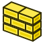
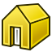
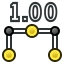

BIM ingame tutorial/es
This documentation is not finished. Please help and contribute documentation.
GuiCommand model explains how commands should be documented. Browse Category:UnfinishedDocu to see more incomplete pages like this one. See Category:Command Reference for all commands.
See WikiPages to learn about editing the wiki pages, and go to Help FreeCAD to learn about other ways in which you can contribute.
{kind=link}
Tutorial steps
¡Bienvenido al entorno de trabajo BIM!
{kind=link}
Este tutorial le guiará a través de las diferentes funcionalidades del Ambiente de Trabajo BIM y le ayudará a familiarizarte con el proceso de trabajo en este entorno modelando un pabellón muy sencillo. Completarlo le llevará entre una y dos horas, dependiendo de su experiencia previa con aplicaciones 3D.
Puedes pausar el tutorial en cualquier momento y reanudarlo más tarde seleccionando Ayuda → Tutorial BIM de nuevo.
Algunos pasos de este tutorial requieren que realice ciertas acciones. Estas se indicarán debajo de este cuadro de texto, con un icono que mostrará si la tarea se ha completado o no. Sin embargo, como en FreeCAD nos gusta facilitarte las cosas, no es obligatorio completar las acciones para avanzar en estas páginas. Puede simplemente navegar por el tutorial y omitir las acciones que le convengan.
Acerca de las versiones de FreeCAD
Este tutorial está escrito para la versión de desarrollo más reciente de FreeCAD (actualmente 1.1.0dev). Sin embargo, este entorno es compatible con cualquier versión de FreeCAD. Si utiliza una versión anterior a la indicada aquí, algunas herramientas BIM podrían tener un aspecto diferente, funcionar de forma distinta o incluso no estar disponibles. Consulte la documentación de BIM Workbench para obtener más información en caso de duda.
Nota
Este tutorial aún se encuetra en desarrollo y, por lo tanto, está incompleto. Si tiene algunas sugerencias o encuentra alguna descripción algo confusa, por favor, ayúdenos a mejorarlo en el foro de FreeCAD: [1].
Tutorial steps
Configurar FreeCAD
FreeCAD cuenta con un extenso sistema de preferencias con numerosas opciones de configuración, ubicado en el menú Editor → Preferencias. Cada vez que trabaje en un proyecto nuevo, podrá añadir más páginas a sus favoritos, lo que lo convierte en una herramienta muy completa.
El entorno de trabajo BIM proporciona una Ventana de Configuración Simplificada, que permite establecer rápidamente algunas de las preferencias más útiles para el trabajo con BIM. Esta ventana de configuración se encuentra en el menú Gestionar → Configuración BIM (también puede hacer clic en el botón correspondiente en la barra de herramientas de Gestión):
{kind=link}
Abra ahora la ventana de configuración simplificada y ajuste las diferentes opciones a su gusto.
En caso de necesidad, situe el cursor del ratón sobre cualquier opción o configuración para ver la descripción de su función que aparecerá durante unos segundos:
{kind=link}
En este tutorial, trabajaremos en centímetros. Por lo tanto, le recomendamos que configure sus unidades de trabajo preferidas en centímetros y el tamaño predeterminado de un cuadrado de la cuadrícula en 10 cm. Estos ajustes se pueden cambiar en cualquier momento desde el botón Plano de Trabajo ubicado en la barra de herramientas principal y el indicador de unidades ubicado en la barra de estado (abajo a la derecha).
{kind=link}
Tutorial steps
Crear un nuevo documento
Si acaba de instalar FreeCAD, probablemente esté viendo la Página de inicio de FreeCAD:
{kind=link}
La página de inicio muestra los últimos documentos con los que ha estado trabajando y, en sus diferentes pestañas, explica cómo obtener ayuda. Pero para empezar a trabajar, necesitamos crear un nuevo documento vacío. Si aún no lo ha hecho, cree un nuevo documento ahora mismo utilizando el botón «BIM/Arquitectura» que aparece en «Nuevo archivo» en la página de inicio, o bien accediendo al menú «Archivo → Nuevo».
{kind=link}
A continuación, se encontrará inmerso en el espacio 3D de FreeCAD, listo para trabajar:
{kind=link}
Tutorial steps
En FreeCAD, existen varias formas de interactuar con el ratón. Estas se denominan Estilos de Navegación. Puede cambiar el estilo de navegación que esté usando en esos instantes en cualquier momento, haciendo clic en el botón de estilo de navegación en la barra de estado. Al pasar el ratón por encima de este botón, también podrá ver la función de cada botón. Algunos estilos están diseñados para funcionar de manera similar a la de otras aplicaciones conocidas. Elija el estilo que le resulte más cómodo.
{kind=link}
Puede controlar cómo ve su modelo en la Vista 3D de varias maneras: usando el ratón (dependiendo del estilo de navegación que haya elegido), el teclado (explora el contenido del menú Vista para obtener más información) o el Cubo de Navegación (haga clic en las diferentes flechas y caras del cubo para alinear la vista a sus necesidades).
{kind=link}
Tutorial steps
Reorganizar la interfaz
En FreeCAD, todos los paneles y barras de herramientas se pueden mover y reorganizar lo que es muy ventajoso pero puede resultar un tanto confuso en los inicios. Los paneles más grandes también se pueden combinar arrastrándolos y soltándolos sobre otros. Si la pantalla es demasiado pequeña para mostrar todas las barras de herramientas y su contenido (las barras de herramientas truncadas aparecerán con el símbolo >>), conviene moverlas a la posición más adecuada para su visualización.
{kind=link}
Las barras de herramientas y los paneles también se pueden activar y desactivar desde el menú Ver.
El entorno de trabajo BIM también incluye botones en la barra de estado para activar y desactivar paneles adicionales como la vista de selección, la vista de informe y la consola de Python. Estos paneles suelen ser útiles al trabajar con FreeCAD, pero ocupan un valioso espacio en la pantalla. Normalmente, puede desactivarlos hasta que los necesite. Recuerde que los mensajes de error se muestran en la vista de informe, así que, si surge algún problema, asegúrese de consultarla.
{kind=link}
Tutorial steps
Las herramientas del Entorno de Trabajo Arquitectura (BIM)
Este Entorno contiene herramientas prestadas de otros entornos de trabajo, como los entornos Borrador o Pieza, además de sus propias herramientas. Estas se organizan en varias categorías. Cada categoría tiene un menú y una barra de herramientas.
Cada herramienta tiene su propia página de documentación que describe en detalle su funcionamiento y las opciones disponibles. Las herramientas de BIM se encuentran en la página Entorno de Trabajo BIM, a la que se accede desde el menú: Ayuda → Ayuda BIM. Para abrir directamente la documentación de una herramienta específica, vaya a Ayuda → ¿Qué es esto? y haga clic en el botón correspondiente de la barra de herramientas.
Tómese un momento para explorar el contenido de los menús que se describen a continuación.
Dibujo en 2D
Estas herramientas permiten dibujar objetos planos, como líneas, polilíneas, rectángulos, arcos, etc., que servirán de base para los objetos BIM. Por ejemplo, se puede usar una polilínea para definir el trazado base de un muro o un rectángulo como perfil de una viga. Todos los objetos 2D se crean en el plano de trabajo actual.
{kind=link}
3D/BIM
Esta categoría contiene herramientas para crear objetos BIM como Muros o Ventanas, y objetos 3D genéricos no BIM como Cajas, que posteriormente se pueden convertir en objetos BIM. El resultado varía según se utilice la herramienta con un objeto seleccionado o no. En caso contrario, se mostrará una interfaz de creación. Si se ha seleccionado un objeto antes de ejecutar la herramienta, se creará un objeto del tipo correspondiente utilizando el objeto seleccionado como base.
{kind=link}
Un ejemplo típico consiste en pulsar el botón Muro con una línea o polilínea seleccionada. Se creará automáticamente un muro, utilizando la línea o polilínea como línea base.
Los objetos que no son BIM, incluidos los creados en otros entornos de trabajo, se pueden convertir en objetos BIM en cualquier momento seleccionándolos y pulsando cualquiera de los botones de las herramientas BIM.
Anotación
Estas herramientas generan objetos anotativos, como dimensiones, textos, etiquetas o cuadrículas, que no se utilizan para el modelado, sino para anotar los modelos y producir dibujos comprensibles.
{kind=link}
Ajuste
Estas herramientas activan o desactivan las posiciones de ajuste Ajustes. Al igual que en la mayoría de las aplicaciones BIM, cada posición de ajuste adicional incrementa el tiempo de cálculo al dibujar, por lo que conviene mantener activadas solo las que necesite.
Modificar
Estas herramientas modifican objetos existentes. Incluyen herramientas de transformación habituales, como Mover o Rotar, además de otras que solo funcionan con tipos de objetos específicos.
Administrar
Esta categoría contiene herramientas de gestión general. La mayoría de ellas permiten editar las propiedades BIM de un gran grupo de objetos simultáneamente, sin necesidad de seleccionarlos.
Tutorial steps
Prepare su espacio de trabajo
Existen muchas maneras de crear objetos BIM en FreeCAD. Puede usar las herramientas BIM nativas de este entorno de trabajo o cualquier otra herramienta de FreeCAD de otros entornos de trabajo. Tanto las herramientas de "Dibujo 2D" como las de "3D/BIM" de este entorno de trabajo, a diferencia de otros entornos como Diseño de piezas, hacen un uso extensivo de "planos de trabajo" y "ajustes".
El (Plano de Trabajo) es donde se crearán los siguientes objetos. Puede configurarlo en uno de los planos ortogonales básicos (Superior, Frontal, Lateral) o usar cualquier cara seleccionada para definir el plano de trabajo actual. También puede usar los (Proxies de los Planos de Trabajo) del menú Utils para almacenar una posición específica del plano de trabajo dentro del modelo. Las (Piezas de Construcción) también contienen una posición implícita del plano de trabajo. Para cambiar el plano de trabajo actual, pulse el botón correspondiente en la barra de herramientas BIM. La Cuadrícula siempre refleja la posición del plano de trabajo.
Como habrá notado, el ángulo de visión y el plano de trabajo no están relacionados. Puede trabajar en su plano de trabajo desde cualquier ángulo de visión.
Configure ahora el plano de trabajo en modo "Superior":
{kind=link}
Las Herrramientas de Ajuste permiten colocar objetos y puntos nuevos con precisión según la geometría existente. Sin embargo, habilitar muchas opciones de ajuste puede ralentizar el dibujo puesto que aumenta el tiempo de cómputo, por tanto, conviene habilitar solo las que se vayan a utilizar. Dedique un momento a revisar la función de cada una, para saber cuáles sería convenientes desactivar para la operación que esté realizando.
{kind=link}
Preste especial atención a la última herramienta, la de ajuste al plano de trabajo, ya que obliga a que cualquier punto ajustado quede sobre el plano de trabajo, impidiendo de esta manera ajustes por encima o por debajo de este. A menudo tendrá que activarla o desactivarla, según la operación que esté realizando.
Tutorial steps
Dibuje una primera pared
Comencemos a construir nuestro pabellón creando algunos muros. Los muros se pueden crear directamente con la herramienta Muro o dibujando primero objetos 2D como líneas, Alambres (polilíneas) o Croquis, que definirán la línea base de nuestros muros. Cuando tenga seleccionado un objeto de línea base, al presionar la herramienta Muro se convertirá automáticamente en un muro.
Primero, aleje la vista hasta que se vea una buena parte o la totalidad de la cuadrícula. Esto facilitará mucho la comprensión de lo que estamos haciendo.
{kind=link}
A continuación, pulse el botón 
{kind=link}
{kind=link}
Si ha creado un muro incorrecto, ¡no se preocupe! Simplemente bórrelo o deshágalo (menú Editar → Deshacer) e inténtalo de nuevo.
Tutorial steps
Dibuje una segunda pared
Cree una segunda pared horizontal de 4 metros (o 400 centímetros) de largo. Seleccione de nuevo la herramienta Muro, mueva el ratón hasta que vea una buena zona de la cuadrícula, para eligir dos puntos de la cuadrícula y poder definir los puntos de inicio y final de la nueva pared:
{kind=link}
Una vez creadas, seleccione ambas paredes pulsando CTRL y haciendo clic en ellas en la vista 3D o en la Vista de Árbol, y ajuste su propiedad altura a 2,5 metros y su anchura a 20 centímetros (o cualquier otra medida con la que se sienta cómodo, si trabaja en otra unidad), para que tengan una aspecto similar a este, (utilice el ratón para girar la vista, según el estilo de navegación que elija):
{kind=link}
Siempre puede corregir o modificar las propiedades de un muro o cualquier otro objeto BIM después de haberlo creado. Al expandir el objeto muro en la vista de árbol y hacer doble clic en la línea base del muro, también puede modificar su objeto base 2D. La mayoría de los objetos BIM en FreeCAD se basan en otro objeto ya creado, como una línea base o un perfil.
{kind=link}
Nota importante
Observará que algunos cambios de propiedades en FreeCAD no se reflejan inmediatamente en el objeto en la vista 3D. En su lugar, el objeto aparece marcado con una marca azul que indica "Pendiente de Recalculación" en el árbol.
{kind=link}
Esto se debe a que un documento de FreeCAD puede ser una cadena muy compleja de objetos interdependientes. Actualizar uno puede provocar la actualización de muchos otros, lo que puede llevar mucho tiempo. Para evitarlo, algunas operaciones simplemente marcan el objeto que se va a recalcular, y usted mismo inicia el recálculo mediante el menú Editar → Actualizar o pulsando Ctrl+R.
Tutorial steps
¡No olvide guardar el archivo regularmente!
Como cualquier otra aplicación informática, FreeCAD puede fallar o bloquearse, especialmente si no tenemos mucha experiencia con ella. Guardar el archivo con frecuencia es un hábito muy recomendable en estos primeros momentos. FreeCAD también cuenta con un mecanismo de guardado automático que se puede configurar en el menú Editar → Preferencias → General → Documento.
Guarde su archivo ahora usando el menú Archivo → Guardar.
Tutorial steps
Dibuje una losa de techo
Ahora colocaremos una losa de techo sobre nuestros muros. En lugar de dibujar la losa directamente, como hicimos con los muros, primero dibujaremos un rectángulo y luego lo convertiremos en una losa. Exploraremos dos métodos para hacerlo; ambos son útiles, así que le sugerimos que pruebe uno primero, luego deshaga el cambio (o recargue el archivo) y pruebe el otro método.
Método 1: Dibuje la losa en el suelo y luego colóquela en su posición
A menudo resulta conveniente considerar el plano XY superior (el plano del suelo) como una especie de "tablero de dibujo", donde construiremos nuestros objetos y los moveremos hasta su posición correcta. Esto ofrece una ventaja adicional: nuestro plano de trabajo ya está en modo "Superior", por lo que no necesitamos modificarlo.
Colóquese en vista superior, aleje un poco la imagen hasta que vea ambas paredes y dibuje un rectángulo que las abarque. Pulse el botón Rectángulo de la barra de herramientas (o elija el elemento de menú Dibujo 2D → Rectángulo):
{kind=link}
{kind=link}
Gire la vista para inspeccionar los resultados. Por defecto, el rectángulo se rellena con una cara. Esto se puede cambiar modificando la propiedad Make Face del rectángulo a False. Para la losa que vamos a construir, esto no tiene impacto; sin embargo, para otros tipos de objetos, el hecho de que el objeto base sea una polilínea o una cara puede marcar la diferencia.
{kind=link}
El siguiente paso consiste en crear una losa extruyéndola con nuestro rectángulo como perfil base. En FreeCAD, los objetos estructurales como columnas, vigas o losas se crean utilizando el mismo objeto, denominado «Estructura». Una vez creado un objeto estructural, basta con configurar su propiedad «Tipo IFC» al tipo deseado (columna, losa, etc.) para cambiar su tipo.
Asegúrese de que nuestro rectángulo esté seleccionado y, a continuación, pulse el botón Losa de la barra de herramientas (o seleccione la opción de menú 3D/BIM → Losa). Como se indicó anteriormente, esto también se puede hacer con las herramientas Columna o Viga, ya que todas producen el mismo tipo de objeto. Una vez creado nuestro objeto, debemos realizar los siguientes cambios en sus propiedades:
{kind=link}
- Establezca su altura en 20 cm.
- En el panel Modelo, la pestaña Datos de la vista de propiedades debe mostrar que el tipo de IFC está configurado como Losa.
Ahora necesitamos colocar nuestra nueva losa de techo en su posición correcta, es decir, por encima de las paredes. Para ello, debemos moverla hacia arriba, en el eje Z, una distancia de 250 cm, que es la altura de nuestras paredes. Simplemente podemos editar la propiedad Emplazamiento de nuestra losa, expandir su atributo Posición y establecer el valor de z en 250 cm. Nuestra losa ya está bien colocada.
{kind=link}
Otra forma de mover nuestra losa a su posición correcta es usar la herramienta Mover del menú Modificar. Para ello, primero debemos colocar nuestro plano de trabajo en un plano vertical, presionando el botón Plano de Trabajo en la Bandeja de Borrador (asegúrese de no tener ninguna cara seleccionada) y configurándolo en XZ (Frente). Al colocarnos en la vista frontal (presione la tecla 1), ahora podemos seleccionar la losa, presionar el botón Mover y mover nuestra losa haciendo clic en uno de sus puntos base, y, con Shift presionado para restringir el movimiento verticalmente, hacer clic en un punto en la parte superior de las paredes:
{kind=link}
{kind=link}
{kind=link}
Método 2: Dibujar la losa directamente en el plano correcto
Otro método útil consiste en trabajar directamente sobre el plano deseado. Podemos establecer fácilmente el plano de trabajo en la superficie superior de los muros, donde queremos colocar la losa. Al seleccionar una cara y pulsar el botón Plano de Trabajo, el plano de trabajo coincide con la cara seleccionada. Seleccione la cara superior del muro y establézcala como el plano de trabajo actual. La cuadrícula se desplaza para mostrar el plano de trabajo actual.
{kind=link}
Todo lo que dibujemos a partir de ahora se realizará en ese plano. Si lo desea, puede configurar la vista superior, pero no es necesario. Una vez que haya configurado su plano de trabajo y si la opción "Ajuste al plano de trabajo" está activada, podrá dibujar directamente en cualquier tipo de vista 3D.
Una vez dibujado nuestro "perfil" rectangular, podemos seguir el mismo método que en el método uno para crear una losa (seleccionarla, pulsar el botón "Estructura" y ajustar sus propiedades).
Tutorial steps
Crear una columna de metal
Vamos a añadir una columna metálica para dar mayor soporte a la losa. Asegúrese de que el plano de trabajo esté en modo "Superior". Para ello, active la vista superior (pulse la tecla "2") y desactive la losa para ver mejor lo que hay debajo. Seleccione la losa y pulse la tecla "Espacio" para desactivar su visualización.
En FreeCAD, es muy fácil activar y desactivar objetos o grupos, y el árbol muestra claramente qué está visible y qué está oculto. ¡Asegúrase de usarlo con frecuencia!
La herramienta Columna (así como la herramienta Viga) tiene algunos perfiles integrados que utilizaremos ahora. Asegúrese de que no haya nada seleccionado y, a continuación, pulse el botón Columna BIM. En Opciones de estructura, seleccione la categoría CHS (para "Perfil hueco circular"; RHS significa "Perfil hueco rectangular", HEA, HEB, etc. son varios perfiles "H", etc.):
{kind=link}
Haga clic en un punto para colocar la columna, más o menos en esta posición. Asegúrese de que la nueva columna tenga un tipo IFC de "Columna" y asígnele una altura de 250 cm para que tenga la misma altura que nuestras paredes.
{kind=link}
El preajuste CHS predeterminado tiene una opción de diámetro de 21,3 mm, demasiado delgado para soportar nuestra losa de techo de hormigón. Afortunadamente, como todo es paramétrico, es fácil cambiar el diámetro. Expanda el nuevo objeto estructural en la vista de árbol y encontrará su objeto de perfil, llamado CHS21.3x2.6_. Cambie su diámetro a 12 cm y su espesor a 8 mm. Ahora tenemos una columna lo suficientemente resistente. Tenga en cuenta que puede especificar las unidades sobre la marcha y cambiar entre 0,8 cm y 8 mm sin problemas. FreeCAD se encargará de la conversión.
Añadir una placa de soporte
Necesitamos una forma de fijar nuestra columna metálica a la losa de hormigón. Así que vamos a añadir una placa en su parte superior, que se pueda atornillar a la losa. Esto ilustrará cómo se pueden modificar fácilmente los objetos BIM y crear los que se necesitan con la máxima precisión.
Comencemos cambiando la altura de nuestra columna de 250 cm a 249 cm, para darle espacio para una placa de 1 cm de espesor. Luego, use la herramienta 16px Rectángulo para dibujar un rectángulo de 20 cm x 20 cm, ya sea en el plano del suelo o seleccionando la parte superior de la columna y estableciéndola como el 16px plano de trabajo, como aprendimos en el paso anterior. Use la herramienta 16px Mover, con 16px Punto medio y 16px Ajustar al centro activados, si es necesario, para centrar el rectángulo sobre el centro de la columna.
{kind=link}
{kind=link}
{kind=link}
{kind=link}
{kind=link}
Utilizando de nuevo la herramienta Losa, cree un objeto estructural a partir del rectángulo, asígnele una altura de 1 cm y muévalo a una altura de 249 cm:
{kind=link}
Ahora agreguemos nuestra placa a la columna. Los objetos BIM en FreeCAD tienen dos propiedades llamadas Adiciones y Sustracciones que pueden recibir objetos que necesitan ser fusionados o sustraídos de ellos. Para agregar la placa a nuestra columna, seleccione la placa, luego, con Ctrl presionado, seleccione Columna y use la herramienta  Agregar componente del menú Modificar. Nuestra placa superior ahora es parte de Columna. Verifique esto comprobando el valor de la propiedad DatosAddition donde Losa debería aparecer.
Agregar componente del menú Modificar. Nuestra placa superior ahora es parte de Columna. Verifique esto comprobando el valor de la propiedad DatosAddition donde Losa debería aparecer.
{kind=link}
{kind=link}
Partiendo de formas simples como «perfiles» y añadiendo o eliminando objetos, podemos crear rápidamente objetos BIM muy complejos. Cabe destacar que las adiciones y eliminaciones de un objeto BIM se pueden modificar fácilmente haciendo doble clic sobre él en la vista de árbol y utilizando los botones «Añadir» y «Eliminar». Un mismo objeto puede utilizarse para añadir o eliminar varios objetos.
{kind=link}
Tutorial steps
Añadir una puerta
Al igual que las columnas y las vigas, las puertas y ventanas se crean a partir del mismo objeto Window en FreeCAD. Solo cambia su tipo IFC. Pueden ser independientes o, si se selecciona un objeto al ejecutar la herramienta, insertarse en otro objeto BIM, en cuyo caso se creará automáticamente un orificio a través de él.
Vamos a instalar una puerta de cristal de 80 cm x 210 cm en una de nuestras paredes. Comencemos colocando el plano de trabajo sobre una cara de la pared, lo que facilitará la colocación precisa de la puerta:
{kind=link}
Luego, con la pared seleccionada, seleccione 16px Puerta del menú BIM. En Opciones de ventana, seleccione el preajuste Puerta de vidrio y establezca Ancho en 80 cm y Alto en 210 cm. Puede configurar los demás valores a su gusto:
{kind=link}
{kind=link}
Haga clic en un punto de la base del muro donde quiera colocar la puerta. Esto puede resultar difícil, ya que las líneas de la cuadrícula no siempre coinciden con los bordes del muro. Pulse la tecla "Q" mientras tenga un ajuste activo en una intersección de la cuadrícula y vuelva a pulsarla con un ajuste activo en la parte inferior del muro. FreeCAD creará un nuevo punto de ajuste donde se cruzan sus ejes horizontal y vertical. Utilice este punto para encontrar uno adecuado.
{kind=link}
Si la puerta no se colocó correctamente, intente usar la herramienta 16px Mover para moverla a su posición correcta. De lo contrario, use la opción Deshacer o elimínela desde la Vista de árbol e inténtelo de nuevo.
{kind=link}
Cuando todo esté hecho, deberá obtener una puerta correctamente insertada en su pared:
{kind=link}
Tutorial steps
Organizando nuestro modelo
Ahora contamos con una creciente colección de objetos BIM en nuestro modelo. Es hora de poner orden. Crear modelos bien organizados y fácilmente comprensibles para otros es fundamental para construir modelos BIM de calidad.
Es recomendable asignar nombres significativos y fácilmente reconocibles a nuestros objetos. Para cambiar el nombre de un objeto, haga clic con el botón derecho sobre él en la Vista de Árbol y seleccione "Cambiar nombre".
Grupos le permiten organizar sus objetos en la Vista de Árbol, como archivos en carpetas. Los grupos se crean haciendo clic con el botón derecho en la raíz del documento o en cualquier otro grupo en la Vista de árbol y seleccionando Crear grupo. Luego puede arrastrar objetos dentro y fuera de los grupos en la Vista de árbol.
{kind=link}
Capas es una forma independiente pero similar de organizar objetos. Las capas permiten anular ajustes visuales como el color y el grosor de línea. Organice sus capas en Gestionar → Gestionar capas. Cualquier objeto nuevo se colocará automáticamente en la capa activa.
{kind=link}

{kind=link}
{kind=link}
{kind=link}
Las Partes del Edificio tienen múltiples usos para representar objetos, conceptos, anotaciones, recursos y más. Consulte su Documentación para obtener más información.
Cree ahora una pieza de edificio seleccionando Nivel del menú 3D/BIM. Asegúrese de que su tipo IFC esté configurado como Planta del edificio. Seleccione todos los objetos BIM raíz (el Walls, Roof y Column) y arrástrelos a su Level. El Door sigue como parte del Wall anfitrión y la placa superior de la columna sigue al Column como una DatosAddition a su propia geometría.
Organizar su modelo BIM por Niveles es una buena práctica, pero no es obligatorio. Sin embargo, NativeIFC asume que los objetos estarán asociados a Niveles.
Tutorial steps
Añadir Planos de Sección
Una de las operaciones más comunes en un modelo BIM es la extracción de dibujos 2D, como plantas y alzados. En FreeCAD existen varias maneras de hacerlo, según el resultado que desee. Básicamente, hay dos opciones:
- Generar el resultado 2D dentro del espacio 3D. Esto resulta útil si desea modificarlo, ampliarlo o controlar mejor su exportación a formatos como DXF o DWG.
- Crear vistas 2D en una Hoja de Dibujo Técnico más adecuada para impresión o exportación a PDF.
En ambos casos, comience con la colocación de un Plano de Sección en su modelo:
{kind=link}
- Seleccione el objeto Nivel que contiene los objetos que creamos en el paso anterior.
- Agregue un plano de sección desde el menú Anotaciones → Plano de sección.
Los planos de sección no atraviesan todo el modelo, sino solo los objetos que aparecen en su propiedad Objetos. Puede seleccionar el plano de sección para comprobar y modificar el contenido de esta propiedad en cualquier momento.
Por defecto, el nuevo plano de sección se ubicará en el centro del objeto seleccionado o su contenido, y apuntará hacia abajo, como para crear una vista de planta. Sin embargo, el plano de sección es un objeto como cualquier otro y se puede mover y rotar según sea necesario. Colóquelo horizontalmente para crear una vista de planta, verticalmente dentro del modelo para crear una sección o fuera del modelo para crear una elevación.
Tutorial steps
Extracción de Vistas 2D como Geometría
Una vez que el plano de sección esté en su lugar, podemos crear una geometría 2D a partir de lo que ve utilizando la herramienta BIM Vista de Sección 2D:
{kind=link}
{kind=link}
- Seleccione el plano de sección
- Cree una Vista de Sección 2D desde Anotación → Crear vistas 2D → Vista de sección [V, V]. Compruebe que DatosModo de proyección esté configurado como
Sólido - Nuestro objeto Vista de sección 2D está oculto bajo los muros. Oculte el nivel y la Vista de sección 2D seleccionándolos ambos en la Vista de árbol y pulsando la barra espaciadora, para que podamos ver mejor el resultado:
{kind=link}
La proyección 2D que creamos es un objeto 2D integrado que se ubicará en el plano (0,0) del modelo. Se puede mover y se recalculará si el modelo cambia.
Para crear una proyección con líneas más gruesas y áreas de corte sólidas, puede crear una Vista de corte 2D desde Anotación → Crear vistas 2D → Corte de sección [V, C]. Realiza la misma acción inicial que una Vista de sección 2D pero establece el DatosModo de proyección del objeto resultante en Caras de corte. Coloque sus dos objetos Vista 2D en nuevas capas capas separadas y asigne a cada una Apariencia con un VistaAncho de línea diferente.
{kind=link}
{kind=link}
Tutorial steps
Anotación y exportación a formatos CAD 2D
Puede colocar Textos, Etiquetas (texto con línea y flecha), Directrices y Dimensiones en cualquier elemento del espacio del modelo: directamente en el modelo 3D o en la vista 2D que creamos en el paso anterior. La elección es suya, según lo que quiera lograr. Si deja la vista 2D justo debajo del modelo 3D, también puede hacerlo todo a la vez.
Las anotaciones (textos, etiquetas, dimensiones) se colocarán en el plano de trabajo actual. Asegúrese de ubicar el plano de trabajo donde desea colocar las anotaciones. De esta manera, puede colocarlas en cualquier plano del espacio 3D: horizontal o verticalmente. También puede moverlas o rotarlas después de crearlas.
Coloquemos una cota horizontal entre los extremos de nuestras dos paredes:
{kind=link}
- Establezca el Plano de Trabajo en la posición superior (XY) File:View-top.png
- Oriente la vista de modo que se vean las bases de ambos muros.
- Seleccione la opción Anotación →

Cota Horizontal del menú. - Active el botón Ajuste de Punto Final en la barra de herramientas de Ajustes.
- Seleccione el primer punto en el extremo del muro izquierdo.
- Seleccione el segundo punto en el extremo del muro derecho.
- Haga clic en un tercer punto para indicar dónde colocar la línea de cota.
{kind=link}
{kind=link}
{kind=link}
Dimensiones ofrece muchas opciones para ajustar su aspecto, tamaño y tipo de texto y flecha. Puede configurar sus preferencias en el menú Editar → Preferencias → Borrador → Textos y Dimensiones
Ahora agreguemos un texto:
{kind=link}
{kind=link}
- Haga clic en una ubicación de la vista 3D para colocar el texto.
- Escriba el texto que desee, por ejemplo Pabellón, y luego haga clic en el botón Crear texto o pulse Intro dos veces.
Una buena idea es crear Groups para los diferentes conjuntos de anotaciones (plano, sección, diferentes escalas, etc.):
- Haz clic derecho en el documento en la vista de árbol y seleccione la opción «Crear grupo» del menú contextual.
- Nombre el nuevo grupo «Anotaciones».
- Seleccione las anotaciones y arrástrelas al grupo «Anotaciones».
Exportando a DXF
Los objetos 2D, como líneas o círculos, las vistas 2D que creamos anteriormente o las anotaciones, son ideales para exportar a formatos CAD 2D tradicionales como DXF o DWG. El formato DWG requiere la instalación de un software adicional en su sistema; consulte las instrucciones para obtener instrucciones si es necesario.
Intentemos exportar nuestro trabajo 2D a DXF:
- Seleccione la vista 2D, la dimensión y el texto.
- Seleccione el menú Archivo → Exportar, elija el formato Autodesk DXF 2D, un nombre de archivo y pulse Exportar.
Si no utiliza ningún programa CAD 2D, existen varias aplicaciones gratuitas y de código abierto que pueden abrir archivos DXF (aparte del propio FreeCAD, por supuesto), como LibreCAD y QCAD CE.
{kind=link}
Tutorial steps
Creación de geometría 2D en una hoja imprimible
Las hojas imprimibles se crean y gestionan con el Entorno de Trabajo de Dibujo Técnico. Creemos una nueva hoja y coloquemos una vista de nuestro modelo en ella:
- Cambie al entorno de trabajo de Dibujo Técnico.
- Cree una nueva hoja vacía usando la plantilla predeterminada del menú: Dibujo Técnico → Página → Insertar página predeterminada.
- Seleccione el plano de sección y crea una vista en la página usando Dibujo Técnico → Vistas de otros entornos de trabajo → Insertar objeto de entorno de trabajo BIM.
- Modifique la propiedad Escala de tu vista arquitectónica.
… Continuará
Tutorial steps
Exportar un archivo IFC
IFC, o Industry Foundation Classes, es un protocolo y formato de archivo para el intercambio de modelos BIM entre aplicaciones. Al guardar su modelo como un archivo IFC, podrá abrirlo en la mayoría de las aplicaciones BIM, tanto de código abierto como propietarias.
Las operaciones de importación/exportación de IFC en FreeCAD se realizan mediante un software externo llamado IfcOpenShell. Consulte la página Arquitectura IFC para obtener más información sobre su instalación.
Una vez instalado IfcOpenShell, exportar el modelo como archivo IFC es tan sencillo como seleccionar los objetos que se desean exportar, o simplemente el contenedor superior (grupo o pieza de construcción) que contiene todos los demás objetos que se desean exportar, y usar el menú Archivo → Exportar y elegir el formato de archivo IFC.
Finalmente, una vez exportado un archivo IFC, siempre es recomendable revisarlo antes de enviarlo a otras personas para asegurarse de que el modelo se vea bien y no falte ningún objeto. Existen muchas aplicaciones gratuitas para visualizar archivos IFC disponibles en internet para diversas plataformas. Un buen visor de código abierto que funciona en todas las plataformas es [2]. Si desea utilizar el archivo IFC para editarlo posteriormente, Bonsai podría resultarle útil.
Para comprobar la estructura y la validez de su modelo para la exportación a IFC, ejecute la herramienta Gestionar → Comprobaciones previas al vuelo. Esto se explicará en la siguiente sección.
Tutorial steps
Gestión de propiedades BIM
Una parte fundamental de un buen modelo BIM son las propiedades no geométricas que se pueden asignar a los objetos, como el tipo, el material o las propiedades específicas de cada tipo. Por ejemplo, un muro puede marcarse como portante o no, o como exterior o interior. El formato IFC (Industry Foundation Classes) es muy completo en este sentido. La cantidad de especificaciones y propiedades que se deseen asignar a los objetos depende principalmente de las necesidades individuales, de la colaboración con otros y de las expectativas de los usuarios respecto al modelo BIM.
Es importante tener en cuenta que todos los objetos BIM/Arquitectura de FreeCAD admiten el conjunto completo de propiedades IFC. Otros objetos de FreeCAD, como los modelados con otros entornos de trabajo, también se exportarán a IFC, pero no se pueden modificar sus propiedades IFC. Sin embargo, se puede convertir cualquier objeto de FreeCAD en un objeto BIM seleccionándolo y utilizando 3D/BIM → Crear componente.
La información principal que puede proporcionar a sus objetos es:
Nombre y descripción
Aunque parezca obvio, la forma más sencilla de que su modelo sea más comprensible para otros es nombrar correctamente cada objeto y, si procede, añadir una descripción. Para ello, basta con seleccionar un objeto y pulsar F2, o cambiar su nombre a la propiedad "Etiqueta". La descripción se encuentra entre las propiedades del objeto.
El tipo BIM/IFC
Esta es la información más importante. En FreeCAD, un objeto creado con la herramienta de muro tendrá su tipo IFC configurado como "Muro" por defecto. Sin embargo, puede cambiarlo en cualquier momento. Por ejemplo, puede usar la herramienta de muro para modelar una viga. Solo necesita cambiar su tipo IFC después de crearlo. Para cambiar el tipo IFC de un objeto, selecciónelo, busque su "Tipo IFC" en sus propiedades y cámbielo a otro tipo en la lista desplegable.
También puede gestionar de forma masiva los nombres, tipos y materiales de varios objetos a la vez utilizando el administrador de elementos IFC que se encuentra en el menú Gestionar → Gestionar elementos IFC.
Materiales
Cada objeto de una construcción tiene un material. Por lo tanto, es lógico asignar a cada objeto del modelo un material adecuado, como hormigón o madera. Para asignar un material a un objeto, selecciónelo y utilice el Gestor de Materiales del menú Gestionar → Material.
Propiedades
Cada objeto BIM también puede recibir propiedades adicionales, por ejemplo, para indicar si un muro es portante o no. IFC permite añadir propiedades personalizadas a prácticamente cualquier elemento, pero la mayoría de los tipos, como Muro o Viga, también tienen conjuntos de propiedades predefinidos, generalmente denominados Pset_WallCommon o Pset_BeamCommon. Puede optar por añadir estos conjuntos a sus objetos, modificar el valor de las propiedades que contienen o añadir sus propias propiedades personalizadas. La gestión de las propiedades IFC de un objeto seleccionado o la edición masiva de las propiedades de varios objetos a la vez se realiza mediante el gestor de propiedades en el menú Gestionar → Gestionar propiedades IFC.
Cantidades
También se pueden especificar cantidades como la longitud, el ancho o la altura de una pared en un archivo IFC. Estas cantidades no están vinculadas a la geometría del objeto, por lo que no se garantiza que reflejen la geometría real del objeto al introducirlas en un archivo IFC. Sin embargo, permiten que las aplicaciones que no pueden procesar la geometría, como las hojas de cálculo, conozcan las dimensiones principales de los objetos. Puede consultar qué cantidades se exportarán a IFC mediante el gestor de cantidades, que se encuentra en el menú Gestionar → Gestionar cantidades IFC.
Herramienta de preimpresión BIM
El formato IFC tiene muchas particularidades y, a veces, la aplicación con la que abrirá su archivo IFC o la persona que lo recibirá tendrá requisitos adicionales. Convertirse en un modelador BIM experto suele implicar familiarizarse con todas estas particularidades y con lo que se debe agregar o especificar a su modelo BIM. El entorno de trabajo BIM de FreeCAD proporciona una herramienta Preimpresión BIM que le permita verificar su modelo para detectar varias de estas particularidades y los requisitos más comunes, y le ayuda a decidir qué incluir o no en su modelo.
Tutorial steps
Explore otras herramientas BIM y otros entornos de trabajo
Tómese un momento para explorar las demás herramientas BIM disponibles. Recuerde que algunas aún no están terminadas y puede que no ofrezcan todas las funciones que espera. Utilice el botón "¿Qué es esto?" del menú "Ayuda" para abrir la página de ayuda de cualquier herramienta. El foro de FreeCAD (https://forum.freecad.org) también es un buen lugar para buscar información o preguntar si encuentra algún problema que no pueda resolver.
FreeCAD es una gran familia de entornos de trabajo, y las herramientas de otros entornos suelen ser útiles. Como vimos anteriormente, casi cualquier objeto creado con otros entornos de trabajo se puede convertir en un objeto BIM válido, simplemente usando la herramienta 3D/BIM → Herramientas 3D genéricas → Componente y asignándole el tipo IFC correcto.
Hay más tutoriales sobre BIM y otros entornos de trabajo en la sección Tutoriales de la Documentación de FreeCAD, y una serie completa de vídeos de tutoriales de BIM en YouTube.
Tutorial steps
¡Ayude a FreeCAD a convertirse en una mejor herramienta!
FreeCAD es un software libre desarrollado por una comunidad de usuarios entusiastas, algunos de los cuales programan y muchos otros contribuyen de diversas maneras para mejorar el software: escribiendo documentación, buscando y reportando errores, aportando ideas, creando tutoriales y mucho más. Cuanto más activos seamos, más rápido se desarrollará el software. ¿Por qué no unirse? Un buen punto de partida es la sección BIM del foro de FreeCAD: [3]. ¡Le esperamos!
Tutorial steps